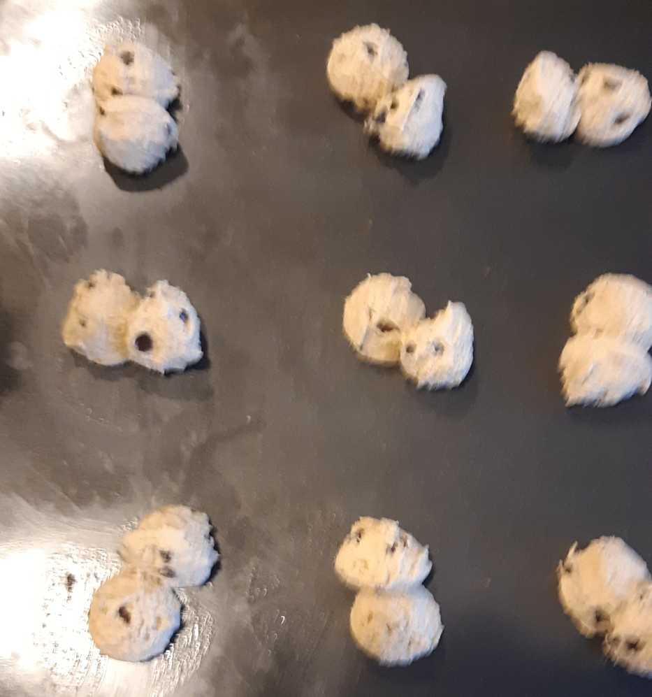
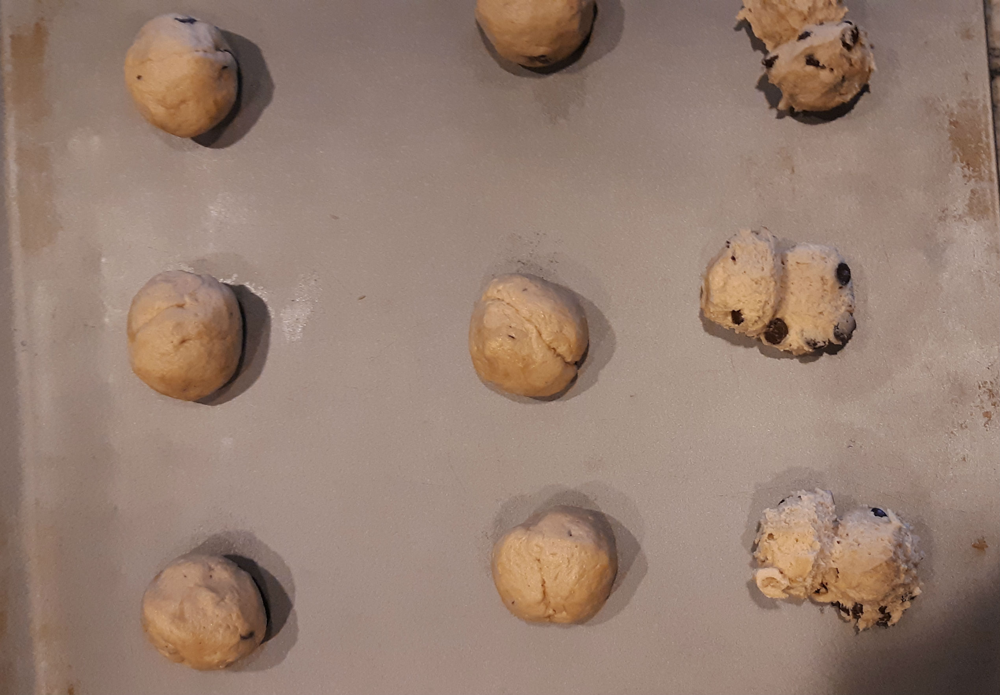
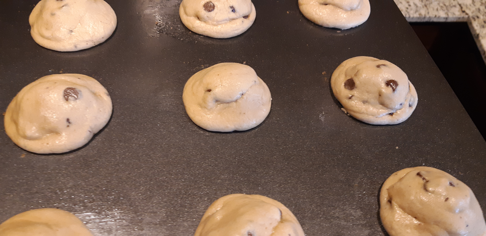
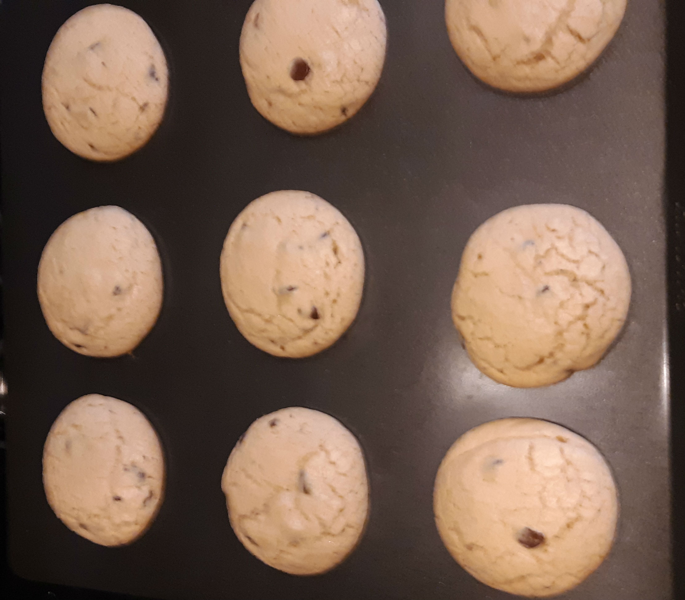
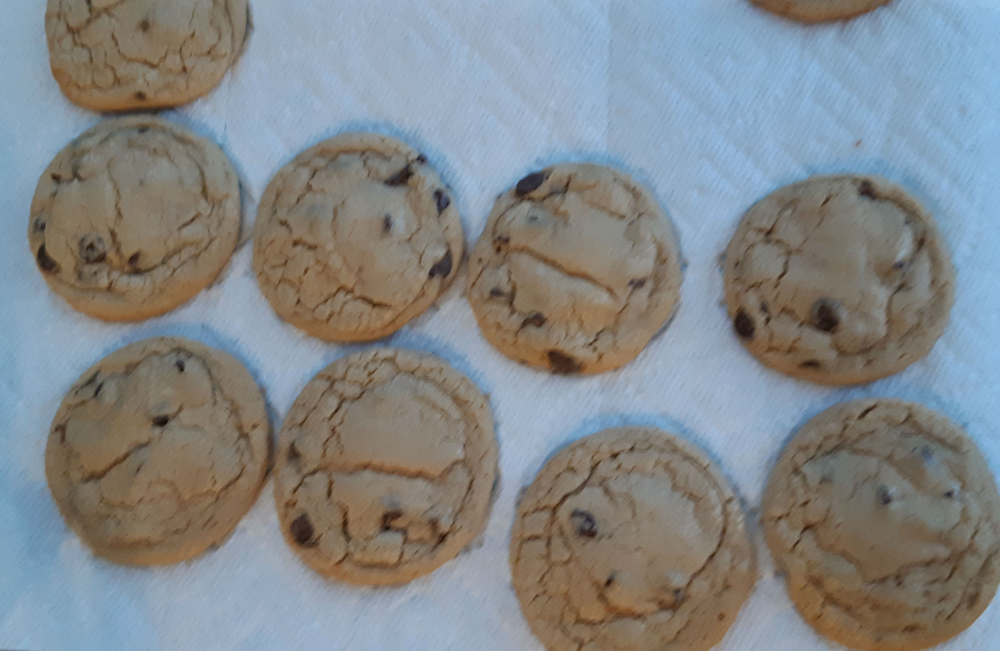

These are probably one of the most requested desserts that I make, and if you're here, your friends will probably like these as well. This recipe comes with a detailed walkthrough
at the bottom of the page if you're so inclined, otherwise the ingredients and instructions are below. I hope you enjoy this recipe as much as I do!
Detailed walkthrough
So with these cookies, I've had people tell me that they're too afraid to try to bake them because they don't think they'll be very good. I'm here to tell you that when I make them
they aren't very good, so you're in good company! But if you do want to make them the way that I do, I'm going to list out what I do, when I do it, and why I do it.
Maybe if I walk people through the steps, someone will make cookies for me for once.
Making the dough
Step 0. Make sure you have the ingredients! Yes, I'm serious, I've had to add this to my personal process because it's something that I've forgotten to do more times than
I care to admit. Nothing worse than getting started and then realizing that you don't have any milk in the fridge and then you have to run to the store.
Or even worse having to talk to your neighbors. This is also a great time to preheat the oven.
Step 1. Take the butter out of the fridge, because if you're like me you didn't plan to make cookies and as such didn't bother to soften it.
Since we're in a hurry, we're just going to take the butter and toss it in the mixer and let the mixer run for a few seconds to break it up a bit.
Next take the shortening and add that to the butter and run the mixer until mixed
Step 2. Add the brown sugar to the butter mixture. I use an older kitchen-aid, so I usually add it in a few steps, since if I add it all at once
it'll kick out a lot of the brown sugar. Going slowly allows the sugar to mix into the butter without making a mess.
This will be the base that you add everything else to, so these first steps are the only ones that I feel are required to occur in this order.
Step 3. Add the liquids! At this point, add in the milk, vanilla, and egg. I prefer to keep the mixer running while adding the milk and vanilla,
because if you add it all when the mixer it stopped, it will splash when you turn in on. However, add the egg when it's stopped so you can pull out
the egg shell that you inevitably drop into the dough. Also, don't put your egg shells in the garbage disposal, apparently it gums it up real bad.
My maintenance guy got mad at me for this, so yeah.
Step 4. At this point your dough should have enough liquid to hold the flour without making too much of a mess.
Again since I use an older kitchen-aid I slowly pour the flour into the mixer, gently tapping the measuring cup against the bowl, until it's all added.
I've never managed to do this without some of the flour kicking out, but if you have a slower speed, you'll probably be fine.
Step 5. Now that you've added the flour, add the salt and baking soda
Step 6. Add the chocolate chips, this is super easy, just pour them in until you're satisfied. Measure this with your heart <3.
Now that you've prepped the dough, the next step is to actually bake it, or you can just eat it now if you want, but I probaly shouldn't legally recommend that.
Baking
If you've made it this far you've resisted the urge to eat all of the raw cookie dough, in which case you should be commended. Alternatively you tried to eat the raw cookie
dough and failed to eat it all, in which case you need to get back in there champ.
on a more serious note, this is where mistakes are most likely to be made. Since we're dealing with cookies we have to be more cogiznant of our bake times
and position in the oven. Since cookies are smaller they bake faster (obviously) which makes them more sensitive to smaller mistakes. With that in mind lets get started!
Step 0. That's right we're doing a step 0 a second time. Get your pans and cooling rack set up. When I bake, I prefer to scoop out all the dough at once,
so it's easier for me to have everything laid out. Also make sure to set up your cooling racks, because you don't want to leave cookies on the pan for too long
when you forget that you didn't set up your racks. I typically use two racks, one for each baking sheet. I also cover them in paper towels, just to make clean up easier.
Step 1. Scoop your dough onto your pans. I use a smaller scoop, so I will typically take two scoops of dough and roll them together.
I'll arrange the cookies in a 3x3 grid on the pan. You can probably get away with different sizes depending on what pan you're using,
but I recommend using fewer until you know what size the finished cookie will be. The reason I use two scoops is the butter causes the cookies to spread,
so if you only use one scoop, they are too thin and don't have the chewy texture we're going for. If you're doing what I'm doing it should look something like this.

Step 2. Roll the scoops together into balls. You probably don't need a picture, but I took a bunch, so you get one anyway.

Step 3. now that you've prepped your baking sheets, next thing is to pop them in the oven.
I generally bake two sheets at once, so I'll place them on separate racks making sure the head of the pans face the same direction
(I should note that the cookie sheets I use only have a raised edge on one side, this is what I mean by the ‘head’ of the pan).
This makes the rotating step easier. For these size cookies, I bake them for 10 minutes, but I rotate the pans at the 5 minute mark.
So put your pan(s) in the oven and set the timer for 5 minutes
Step 4. DO NOT SKIP THIS STEP! At the 5 minute mark you're going to rotate your pans. You'll need to rotate the pans 180°,
so that the head of the pan is facing the opposite way. If you're doing multiple pans, you're going to need to switch racks at the same time.
This is why having both pans facing the same way makes it easier; you'll pull the pan on the top rack out, take the pan from the bottom rack,
put that one on the now empty top rack and then rotate it. When you put the pan in your hand back on the bottom rack in the oven, you just need
to match the direction of the pan that's currently on the top rack. Also at this point your cookies are still going to look like amorphous blobs.
This is normal. Here's what mine look like at this point.

Step 5. Now that you've rotated the pans, we need to finish letting them bake. set the timer for 5 minutes.
Step 6. Right after the cookies finish baking take the pans out of the oven and let the cookies set on the pan for 2 minutes before you scoop them off.
This is probably the most important step. Since the pan is still hot, the bottom of the cookies are going to keep cooking, this is going to give us a
little bit of a crunch while keeping the cookie soft. Don't let them set on the pan for too long though, it is possible to cook the bottoms a little too much.
If you notice the cookies come out really puffy, this is normal; there's a lot of hot air in them, and as they cool they will deflate to the desired size.
Here's what they should look like at this point.

Step 7. Now that the cookies have had a chance to set up, it's time to transfer them to the cooling rack. As I mentioned in the tips and tricks section, I prefer to use
a metal spatula for this. But you can use whatever you have available. Let the cookies cool for about 10 minutes or so before moving them to a container or eating them.

That's it, you've successfully made chocolate chip cookies! You should feel proud of yourself, it took me a few years until I could do these. So you're already better than I am